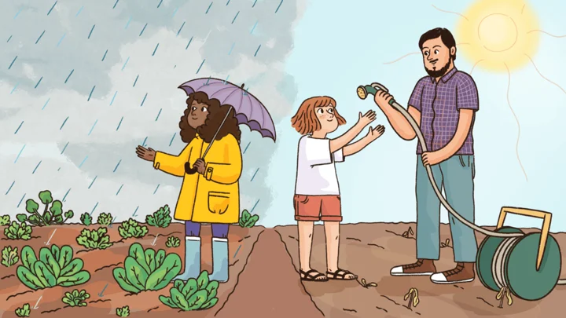

The economist asking how education impacts equality
BOLD interview on my research and why a fairer society benefits children.
Read the interview ↗Guido Neidhöfer
I am an economist with a research focus on inequality, social mobility, education, and labour markets in both developed and developing countries. My work explores how long-term shocks influence equality of opportunity, how education and social policies can help reduce inequalities, and how globalization and technological change affect social mobility.
I apply theory-driven quantitative methods, including causal inference and quasi-experimental approaches, to generate insights that can inform public policy. Alongside my academic research, I have collaborated with multilateral organizations and worked with NGOs in developing-country settings.
Coming from a multicultural background and speaking five languages, I value intercultural dialogue and collaboration. Beyond research, I am deeply committed to teaching, mentoring, capacity-building, and fostering international cooperation in the academic community.
I completed my PhD in Economics at Freie Universität Berlin in 2017, within the doctoral programme Public Economics & Inequality.
In June 2023, I was awarded the Italian National Scientific Habilitation (ASN) as associate professor in Economics (13/A1), Economic Policy (13/A2), Public Economics (13/A3) and Econometrics (13/A5).

BOLD interview on my research and why a fairer society benefits children.
Read the interview ↗campus.leben · Freie Universität Berlin
A portrait published by Freie Universität Berlin’s online magazine.
Read the portrait (German) ↗Mitbestimmung · Hans-Böckler Foundation
A magazine portrait of my career. My thanks to the Foundation for its support.
Interview in Mannheimer Morgen, 17 December 2021. Select a page to read the full image.